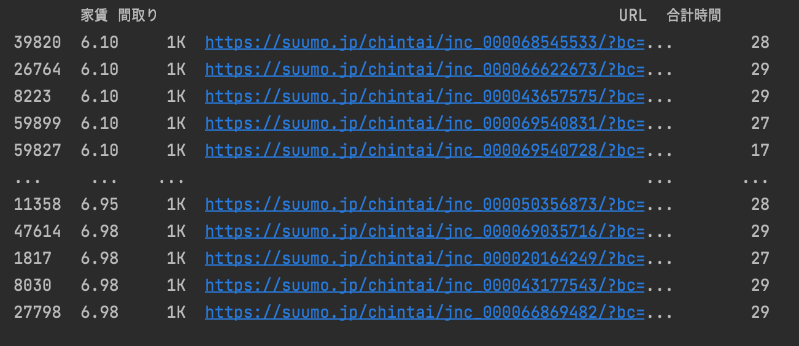

賃貸情報のデータ分析
学生が家を探す際に、さらに大切に思うのは「家賃」 「間取り」 「学校までの距離」 だ。ですから、私はこのレポートで 「家賃」 「間取り」 「学校までの距離」に沿って資料を分析した上で、消去法でおすすめの家を紹介したいと思う。
まず、資料で学生たちが主に居住するワンルームと1Kの平均家賃を探してみると、
このような結果を確認できる。
1.家賃
平均を考慮して、6万円当たりの家を探して資料を分析すると、

このように、６万円から６.99万円までの家を探すことができる。（まだ間取りは考慮しない。）
2. 間取り
学生の住居形態は、普通にワンルームと1kが多い。6万円あたりの家のうち、ワンルームと1kの家は


このように簡略化できる。（家賃＋間取りの結果）
3. 学校までの距離
MMCを基準にして、到着まで30分以内を考えてみると、「家賃」 と 「間取り」 を考慮して

このように結果が出る。（家賃＋間取り＋合計時間）
4. 面積
20面積以上の家を探してみると、「家賃」 と 「間取り」、 「学校まで３０分以内」を考慮して

このように結果が出る。（家賃＋間取り＋合計時間＋面積）
おすすめエリアの紹介
上記のような方法で消去法によりデータを簡略化してみると、条件は
- ６万円〜６.９９万円
- ワンルーム、1K
- 学校まで３０分以内
- ２０面積以上
このようになる。結論的におすすめのエリアは、

このように整理できる。
- import pandas as pd
- import matplotlib.pyplot as plt
- pd.set_option('display.unicode.east_asian_width', True)
- plt.rcParams['font.family'] = 'IPAexGothic'
- data_path = "data.csv"
- df_data = pd.read_csv(data_path, encoding="utf-8-sig")
- mask=(df_data["間取り"]=="ワンルーム")
- df_selected_roomtype=df_data[mask]
- df_selected_roomtype.loc[:, "家賃"].hist(range=(0,20),bins=40)
- plt.xlabel("家賃(万円)")
- plt.ylabel("件数")
- plt.xlim(0, 16)
- plt.title("ワンルーム家賃")
- plt.show()
- mask=(df_data["間取り"]=="1K")
- df_selected_roomtype=df_data[mask]
- df_selected_roomtype.loc[:, "家賃"].hist(range=(0,20),bins=40)
- plt.xlabel("家賃(万円)")
- plt.ylabel("件数")
- plt.xlim(0, 16)
- plt.title("1Kの家賃")
- plt.show()
- mask = ((6 < df_data['家賃']) & (df_data['家賃'] < 7) & (df_data['間取り'] == 'ワンルーム'))
- print(df_data[mask].sort_values(by="家賃", ascending=True).loc[:, ["家賃", "間取り", "URL"]])
- mask = ((6 < df_data['家賃']) & (df_data['家賃'] < 7) & (df_data['間取り'] == '1K') & (0 < df_data['合計時間']) & (df_data['合計時間'] < 30))
- print(df_data[mask].sort_values(by="家賃", ascending=True).loc[:, ["家賃", "間取り", "URL", "合計時間"]])
- mask = ((6 < df_data['家賃']) & (df_data['家賃'] < 7) & (df_data['間取り'] == '1K') & (0 < df_data['合計時間']))
- print(df_data[mask].sort_values(by="家賃", ascending=True).loc[:, ["家賃", "間取り", "URL", "合計時間"]])
- mask = ((6 < df_data['家賃']) & (df_data['家賃'] < 7) & (df_data['間取り'] == '1K') & (0 < df_data['合計時間']) & (df_data['合計時間'] < 30) & (df_data['面積'] > 20))
- print(df_data[mask].sort_values(by="家賃", ascending=True).loc[:, ["家賃", "間取り", "合計時間", "URL", "面積"]])
- mask = ((6 < df_data['家賃']) & (df_data['家賃'] < 7) & (df_data['間取り'] == '1K') & (0 < df_data['合計時間']) & (df_data['合計時間'] < 30) & (df_data['面積'] > 20))
- print(df_data[mask].sort_values(by="家賃", ascending=True).loc[:, ["URL"]])